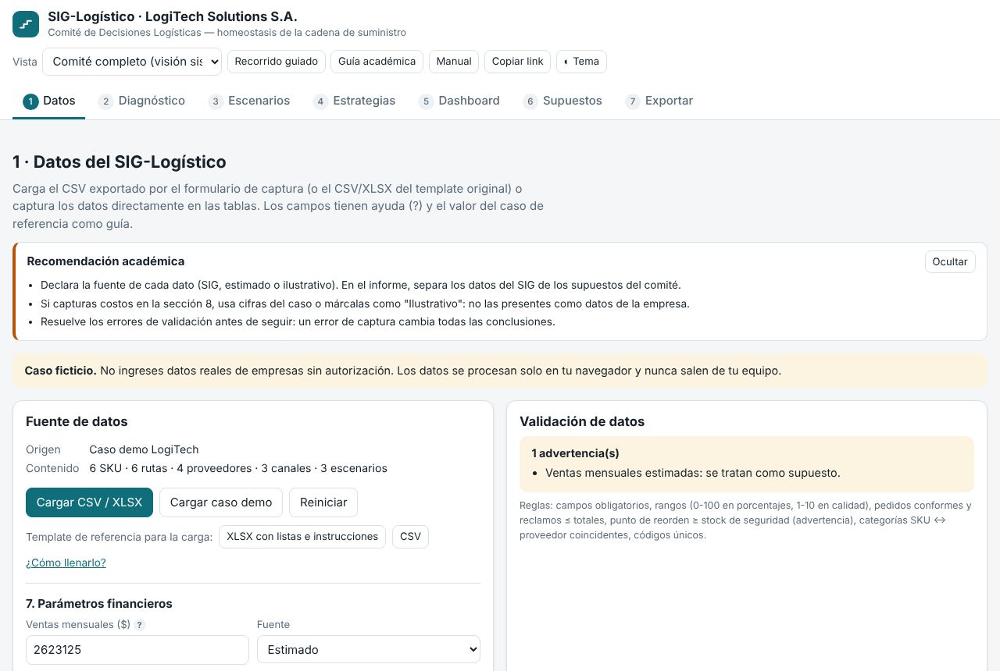

Manual de usuario — SIG-Logístico LogiTech Solutions S.A.
Paso a paso del simulador y guía del ejercicio “Estrategas de la Cadena de Suministro: Decisiones Inteligentes con un SIG-Logístico”. Versión del aplicativo: v1.2.0 · octubre de 2026.
Abrir el simulador Descargar este manual en PDF · Template de referencia (XLSX)
© 2026 AI HYPERPLANE S.A.S. Propiedad intelectual de AI HYPERPLANE S.A.S. El simulador puede usarse libremente con fines académicos y educativos; cualquier otro uso requiere autorización escrita. Ver términos de uso.
1. Introducción
El SIG-Logístico es un simulador web que reproduce el Sistema de Información Gerencial de una empresa de distribución. Permite cargar los datos del SIG, diagnosticar la cadena de suministro por rol, simular disrupciones, aplicar estrategias y evaluar el resultado con un tablero integrado y un indicador síntesis, el Índice de Homeostasis.
Está pensado para estudiantes y docentes de logística, cadena de suministro y sistemas de información gerencial. No requiere instalación, cuenta ni inicio de sesión: funciona por completo en el navegador y los datos no salen del equipo de quien lo usa.
El caso: LogiTech Solutions S.A.
LogiTech es una empresa ficticia que distribuye tecnología y electrodomésticos desde un Centro de Distribución (CD) en Bogotá hacia tres almacenes satélite en Medellín, Cali y Bucaramanga. Aunque sus ventas crecen, enfrenta:
- Entregas tardías o incompletas que afectan su reputación con grandes cadenas y clientes finales.
- Costos de almacenamiento elevados: sobrestock en productos de baja rotación y quiebres en los de alta demanda.
- Sobrecostos de transporte por envíos urgentes y fletes no planificados.
- Poca visibilidad e integración entre compras, almacén y distribución.
2. El ejercicio académico
Objetivo de aprendizaje
Comprender cómo un Sistema de Información Gerencial en logística (ERP, WMS, TMS) respalda la planificación, la mitigación de riesgos y la toma de decisiones estratégicas para optimizar la cadena de suministro, garantizar la eficiencia operativa y maximizar el nivel de servicio al menor costo global posible.
Dinámica
Los estudiantes actúan como el Comité de Decisiones Logísticas. La organización se trata como un sistema autorregulado que busca la homeostasis: equilibrio interno, protección y continuidad del negocio. El comité extrae e interpreta la información del SIG, analiza el impacto sistémico de las disrupciones y formula estrategias sustentadas en datos.
Roles y KPIs
| Rol | Responsabilidad | KPIs | Dónde se ven en el simulador |
|---|---|---|---|
| Director/a de Cadena de Suministro | Visión holística y decisiones finales | Costo logístico % ventas, OTIF global | Diagnóstico (bloque Director), Dashboard, Índice de Homeostasis |
| Analista de Inventarios (WMS) | Capacidad, stock y exactitud del registro | Rotación, DIO, IRA | Diagnóstico (tabla de SKU), gráficos de stock y DIO |
| Coordinador/a de Transporte (TMS) | Rutas, flota, última milla y fletes | OTIF, costo de transporte por unidad | Diagnóstico (rutas), sección 8 de costos, gráfico OTIF y costo/km |
| Gestor/a de Compras | Proveedores y tiempos de abastecimiento | Lead time, fill rate | Diagnóstico (índice de riesgo), plan estructural de compras |
| Analista de Servicio al Cliente | Experiencia, reclamos y devoluciones | Perfect Order, devoluciones, costo de logística inversa | Diagnóstico (canales), control de calidad en empaque |
Disrupciones del caso
- Disrupción en transporte: bloqueo prolongado de una vía principal y alza del combustible del 20%.
- Efecto látigo: una campaña no notificada a logística eleva 80% la demanda de un grupo de productos.
- Fallo crítico de proveedor: el proveedor principal del producto de mayor margen quiebra y suspende despachos tres semanas.
Entregable y cómo lo cubre el simulador
| Componente del Informe Ejecutivo Gerencial | Módulos del simulador |
|---|---|
| Diagnóstico Inicial: estado de la cadena antes de las medidas | 2 · Diagnóstico (por rol, hallazgos de calidad de datos, brechas) |
| Dashboard Integrado: gráficas que evidencian el problema y la solución | 5 · Dashboard (exporta cada gráfico en PNG) |
| Matriz de Decisiones Estratégicas: acción por rol y dato del SIG que la respalda | 4 · Estrategias y la Matriz de decisiones del Dashboard |
| Evaluación de Sinergia y Homeostasis | Dashboard: IH, recuperación, costo de la homeostasis, sinergias; Estrategias: contingencia vs. estructural |
| Anexos: supuestos, hallazgos, brechas, fórmulas | 6 · Supuestos (con sensibilidad) y 7 · Exportar (XLSX/JSON) |
3. Acceso y requisitos
- Acceso: abre el link del simulador en cualquier navegador moderno (Chrome, Edge, Safari o Firefox), en computador o celular. No hay registro ni contraseña.
- Internet: se necesita al abrir la página para descargar las librerías de gráficos y Excel. El cálculo funciona aunque fallen.
- Privacidad: todo el cálculo ocurre en tu navegador. Los datos no se envían a ningún servidor.
- Guardado: tu análisis se guarda automáticamente en el navegador que estás usando. Para llevarlo a otro equipo, descarga el JSON o copia el link del análisis.
- Recomendación: usa un computador para el trabajo completo; el celular sirve para consultar resultados.
4. La interfaz

| Elemento | Para qué sirve |
|---|---|
| Vista | Elige “Comité completo” o un rol. El simulador prioriza la información de ese rol (lo abre primero y lo resalta) sin ocultar la visión sistémica. |
| Recorrido guiado | Tour corto de seis pasos adaptado al rol elegido. |
| Guía académica | Paso a paso del entregable, buenas prácticas, glosario y referencias. |
| Manual | Abre este documento. |
| Copiar link | Copia un link que reproduce tu análisis exacto (datos, escenarios, estrategias y supuestos). |
| Tema | Alterna entre modo claro y oscuro. |
| Pestañas 1 a 7 | Datos, Diagnóstico, Escenarios, Estrategias, Dashboard, Supuestos y Exportar, en el orden del ejercicio. Con el teclado: flechas izquierda y derecha. |
| “?” (ayudas) | Pasa el cursor, enfoca con Tab o toca el “?” para ver la definición, la fórmula o cómo leer un gráfico. |
| ƒ ver cálculo | Muestra la fórmula de cada cifra con los valores del caso sustituidos. |
| Recomendación académica | Recuadro al inicio de cada módulo con lo que conviene llevar al informe. Se puede ocultar. |
5. Paso a paso
5.1 Datos: cargar o capturar la información del SIG
Tienes tres caminos: usar el caso demo (se carga solo la primera vez), cargar un archivo con el template de referencia o capturar los datos directamente en las tablas.
Usar el template de referencia
- En Datos → Fuente de datos, pulsa XLSX con listas e instrucciones (o CSV). El archivo viene lleno con el caso LogiTech como ejemplo.
- Abre el XLSX. Tiene cuatro hojas: Plantilla_SIG (la que se carga), Instrucciones, Diccionario (tipo, unidad, rango y uso de cada campo) y Listas (valores de las listas desplegables).
- Reemplaza los valores respetando las reglas: no cambies los títulos numerados ni los encabezados; para agregar registros inserta filas dentro de la sección, sin dejar filas vacías; escribe números sin símbolos ni separadores de miles; porcentajes de 0 a 100.
- Guarda el archivo y pulsa Cargar CSV / XLSX. El simulador lee la primera hoja.
- Revisa la tarjeta Validación de datos: corrige los errores (en rojo) y evalúa las advertencias (en amarillo).
Capturar o editar en las tablas
- Cada campo tiene ayuda (“?”) y muestra el valor del caso de referencia como guía. Las máscaras impiden letras en campos numéricos y ajustan rangos (porcentajes de 0 a 100, calidad de 1 a 10).
- Los códigos se completan solos: escribe
7en el código de SKU y quedaSKU-7(lo mismo conRT-,PRV-yESC-). - Listas estandarizadas (picklists): categorías, nodos de origen y destino, canales, estado y responsable de los KPIs, KPI afectado y modelo de simulación se eligen de una lista. Si necesitas un valor nuevo, elige “Otro…” y escríbelo: queda agregado a la lista para todo tu análisis.
- + Agregar fila y ✕ agregan o eliminan registros en cada sección.

Sección 1: KPIs globales e indicadores adicionales
Los cinco KPIs del Índice de Homeostasis (costo logístico, OTIF, rotación, lead time y Perfect Order) conservan su nombre; sus valores, metas, estado y responsable se editan. Con + Agregar indicador puedes registrar otros indicadores —por ejemplo fill rate global, DIO o IRA— con su unidad y si “mayor” o “menor” es mejor. Son informativos: aparecen en el Diagnóstico con su semáforo y en las exportaciones, pero no entran al IH.

Sección 6: matriz de escenarios
Agrega, modifica o elimina eventos. Cada evento tiene un modelo de simulación:
- ESC-01 · Transporte: bloqueo de una ruta y alza del combustible.
- ESC-02 · Demanda: pico de demanda (efecto látigo) en un SKU.
- ESC-03 · Proveedor: suspensión de despachos de un proveedor.
- Cualitativo: eventos que el simulador no cuantifica (ciberataque, huelga, inundación). Se documentan en la matriz, aparecen en el módulo Escenarios y deben analizarse en el informe.
Cada modelo cuantitativo simula un evento a la vez; si asignas el mismo modelo a dos eventos, el simulador cuantifica el primero y te avisa.

Sección 7: ventas
Las ventas mensuales son obligatorias. Si no las tienes, Usar estimado las calcula como Σ(demanda × costo) × (1 + margen) y las marca como supuesto.
Sección 8: costos logísticos y financieros (opcional)
Permite ingresar transporte regular, fletes urgentes, almacenamiento, mantenimiento de flota, administración, costo de capital del inventario, costo de ventas y penalidad por pedido incumplido, cada uno con su fuente. Con estos datos el simulador:
- Calcula el margen real, los viajes por ruta y el costo de mantener inventario (en lugar de suponerlos).
- Calcula el costo de transporte por unidad (KPI del rol de Transporte) y el costo de almacenamiento por unidad.
- Valora el ahorro de fletes urgentes (SS/ROP y S&OP), de mantenimiento de flota (consolidación) y las penalidades de la disrupción.
- Compara el desglose con el costo logístico reportado y lo señala como hallazgo si no cuadra.
El botón Cargar valores ilustrativos llena la tabla con cifras coherentes con el caso (suman cerca del 14,2% de las ventas), marcadas como “Ilustrativo (supuesto)”. Úsalas para practicar, pero decláralas como supuestos en el informe. Si dejas la sección vacía, los resultados no cambian.

5.2 Diagnóstico inicial por rol
Muestra el estado de la cadena antes de las disrupciones, en un bloque por rol:
- Director/a: IH base y su banda, costo logístico mensual en $ y su exceso sobre la meta, scorecard de los cinco KPIs, indicadores adicionales y, si ingresaste la sección 8, la composición del costo.
- Inventarios: por SKU, demanda diaria, stock, SS y ROP del WMS frente a los recomendados, DIO, cobertura y estado (quiebre inminente, reordenar, sobrestock o sano).
- Transporte: OTIF, costo por km, ocupación y capacidad ociosa por ruta; costo de transporte por unidad si hay costos.
- Compras: índice de riesgo de proveedores = (lead time / meta) × (1 − fill rate) × (10 / calidad), y el aviso del problema estructural de lead time.
- Servicio: Perfect Order, reclamos, devoluciones y costo de logística inversa por canal.
Al final aparecen los hallazgos de calidad de datos (datos reportados que no cuadran con su cálculo; el original nunca se sobrescribe) y las brechas de información (lo que el SIG no permite calcular, como el IRA).


5.3 Escenarios: simular las disrupciones
- Activa uno o varios escenarios con el interruptor de cada tarjeta.
- Ajusta sus parámetros: ruta bloqueada, días, aumento del tiempo de tránsito, sobrecosto del desvío y alza del combustible (ESC-01); SKU y % de aumento de demanda (ESC-02); proveedor y días sin despacho (ESC-03).
- Lee el impacto aislado en cada tarjeta (por ejemplo, el día de quiebre del SKU) y la tabla de impacto: los cinco KPIs, el Δ de costo logístico, las ventas perdidas, las penalidades, el impacto total en $ y el IH de cada escenario y de la combinación.
- Usa el gráfico de stock diario para mostrar cuándo y cuánto se pierde.


5.4 Estrategias: palancas, plan estructural y optimizador
Hay siete palancas de contingencia y una estructural. Cada tarjeta muestra el rol responsable, el KPI que ataca, el dato del SIG que la justifica, sus parámetros (etiquetados como supuesto), su costo mensual y su Δ IH cuando se aplica sola.
| Palanca | Rol | Qué hace en el modelo |
|---|---|---|
| 3PL / ruta alterna | Transporte | Sostiene el OTIF de la ruta bloqueada; reemplaza el sobrecosto del desvío por el del 3PL. |
| Consolidación / cross-docking | Transporte | Sube la ocupación de las rutas hasta el objetivo y elimina viajes. |
| Recálculo de SS y ROP | Inventarios | Repone los SKU bajo el ROP recomendado; reduce fletes urgentes si hay costos. |
| Rebalanceo de sobrestock | Inventarios | Lleva los SKU en sobrestock al DIO objetivo y libera capital. |
| Proveedor alterno | Compras | Pedido de emergencia por el faltante que causa la disrupción; opción de reemplazo definitivo. |
| Plan S&OP | Director/a | Reduce el pico del efecto látigo; reduce fletes urgentes si hay costos. |
| Control de calidad en empaque | Servicio | Reduce devoluciones por daño; esos pedidos pasan a perfectos. |
| Plan estructural de compras | Compras | Lleva a los proveedores con lead time alto a un lead time objetivo, con sobrecosto de compra. Es de mediano plazo. |

Contingencia vs. plan estructural
Compara el resultado de las palancas de contingencia con y sin el plan estructural: IH, banda, KPI más débil, lead time, costo y costo por punto. Sirve para distinguir lo que restaura la operación de lo que cambia su punto de equilibrio.

Optimizador de combinaciones
Evalúa las 256 combinaciones posibles de las ocho palancas con tus datos y escenarios. El gráfico ubica cada combinación por costo neto y por IH, y une la frontera eficiente: las combinaciones para las que no existe otra más barata con un IH igual o mayor. La tabla propone:
- Máximo IH alcanzable.
- Mejor $/punto que recupera todo el daño: la más eficiente entre las que devuelven al menos el IH previo al choque.
- Mejora y ahorra: mejora el IH con ahorro neto.
- Más barata en Tensión / Equilibrio: el costo mínimo para cambiar de banda.
El botón Aplicar activa esa combinación. Si tu selección no está en la frontera, el simulador te dice qué combinación logra lo mismo o más por menos.

5.5 Dashboard de evaluación
Compara los tres estados: Base (azul), Disrupción (naranja) y Con estrategia (verde).
- Encabezado: IH de los tres estados con su banda, tasa de recuperación, KPI más débil y costo de la homeostasis.
- Scorecard: los cinco KPIs frente a la meta con semáforo (verde cumple; amarillo ≥ 90% de la meta; rojo por debajo) y “ver cálculo” de cada estado.
- Gráficos: radar de cumplimiento, IH por estado, KPIs vs. meta, cascada del costo logístico, stock diario del SKU afectado, stock vs. SS vs. ROP, DIO, OTIF y costo por km, lead time vs. fill rate, Perfect Order y devoluciones. Cada uno tiene “?” con “cómo leerlo” y botón PNG.
- Contingencia vs. estructural y resumen del optimizador.
- Vista por rol: contribución de cada rol al IH (100 × peso × cumplimiento de su KPI).
- Matriz de decisiones: Rol · Decisión · Dato del SIG · KPI impactado · Base → Disrupción → Con estrategia · Costo · Δ IH.
- Sinergias entre áreas y supuestos en uso.


5.6 Supuestos y sensibilidad
Todo lo que el SIG no trae es un parámetro editable etiquetado como Supuesto: margen, días de protección, umbral de sobrestock, viajes por ruta, participación del combustible, costo de mantener inventario y fracciones variables. Si ingresaste la sección 8, algunos se marcan como Derivado y se editan desde los costos.
Aquí también se configuran los pesos del IH (deben sumar 100%; si los cambias, escribe la justificación) y las bandas.
El análisis de sensibilidad mueve cada supuesto ±10, 20 o 30% y muestra cuánto cambia el IH con estrategia (gráfico tornado). El veredicto indica si la banda o el KPI más débil cambian: si no cambian, la conclusión es robusta.

5.7 Exportar y compartir
- Checklist de la actividad: verifica datos sin errores, diagnóstico, al menos un escenario, dashboard, matriz con al menos una estrategia, evaluación de homeostasis y justificación de pesos.
- CSV en formato template (secciones 1 a 8): vuelve a cargarse sin cambios.
- XLSX del análisis: hojas Datos, KPIs, Escenarios, Estrategias, Homeostasis, Matriz, Optimizador, Sensibilidad, Estructural, Costos y Supuestos.
- JSON del estado completo, con todos los resultados: es la fuente recomendada para escribir el informe.
- PNG de todos los gráficos del dashboard y vista imprimible / PDF.
- Copiar link de este análisis: quien lo abra ve exactamente tu análisis, sin cuenta. Si el link es muy largo, comparte el JSON (“Abrir JSON” lo carga).

6. El Índice de Homeostasis
Es un indicador propuesto por el comité (no proviene del documento de la actividad), inspirado en el concepto fisiológico de homeostasis (Cannon, 1932): la capacidad de un sistema de mantener su equilibrio interno ante perturbaciones.
Ejemplo con el caso base: costo 10/14,2 = 0,70; OTIF 81,5/95 = 0,86; rotación 4,2/8 = 0,53; lead time 5/12 = 0,42; Perfect Order 78/92 = 0,85. IH = 100 × 0,2 × (0,70 + 0,86 + 0,53 + 0,42 + 0,85) = 67,0 → Desequilibrio; KPI más débil: lead time.
Siempre se acompaña de:
- Tasa de recuperación = (IH estrategia − IH disrupción) / (IH base − IH disrupción) × 100. Más de 100% significa que la organización queda mejor que antes del choque.
- Costo de la homeostasis = costo neto mensual de las estrategias / puntos de IH recuperados.
- KPI más débil: el de menor cumplimiento, que indica la siguiente prioridad.
Por qué así: el tope en 1 impide que sobrecumplir un KPI compense el deterioro de otro, que es justamente la idea de equilibrio; los pesos iguales evitan sesgar hacia un rol. Limitación: depende de las metas de la empresa, por eso sirve para comparar estados del mismo caso, no empresas entre sí.
Regla conservadora
Una estrategia puede, como máximo, borrar el daño de la disrupción: los quiebres que ya existían en la base no se cuentan como ventas ganadas. Así los resultados son defendibles ante un evaluador.
7. Cómo construir el Informe Ejecutivo Gerencial
- Resumen ejecutivo (media página): problema, decisión recomendada, resultado esperado en IH y en $, y costo.
- Diagnóstico Inicial: scorecard base, IH base y su banda, lectura por rol, hallazgos de calidad de datos y brechas. Distingue síntomas de causas.
- Impacto de las disrupciones: tabla de impacto por escenario y combinado, en KPIs, $ e IH; incluye los eventos cualitativos de la matriz.
- Dashboard Integrado: 4 a 6 gráficos exportados en PNG, cada uno con una frase de lectura (radar, IH por estado, cascada de costo, stock diario, KPIs vs. meta).
- Matriz de Decisiones Estratégicas: la del dashboard, con una justificación por fila: qué dato del SIG la respalda y qué KPI mueve. Defiende la combinación con el optimizador.
- Evaluación de Sinergia y Homeostasis: IH de los tres estados, recuperación, costo de la homeostasis, sinergias entre áreas y contingencia vs. estructural.
- Conclusiones y recomendaciones, separando corto plazo (contingencia) y mediano plazo (estructural).
- Anexos: supuestos (con la sensibilidad), hallazgos, brechas, definición del IH y fórmulas (“ver cálculo”).
Errores frecuentes
- Presentar el IH como un indicador oficial o de la actividad: es una propuesta del comité.
- No declarar los supuestos o presentar valores ilustrativos como datos de la empresa.
- Reportar cifras sin interpretarlas: cada número debe responder “¿qué significa para la decisión?”.
- Activar todas las estrategias sin justificar: el optimizador puede mostrar que hay combinaciones más eficientes.
- Reclamar ventas por encima de la base (la regla conservadora lo impide; explícala).
8. Resultados de referencia del caso demo
Úsalos para verificar que el simulador y tu lectura van bien (valores por defecto, sin la sección 8):
| Estado | IH | Banda | Nota |
|---|---|---|---|
| Base | 67,0 | Desequilibrio | KPI más débil: lead time (12 días vs. meta 5) |
| Con los tres escenarios | 46,5 | Desequilibrio | |
| Con las siete palancas de contingencia | 70,9 | Desequilibrio | Recuperación 119%; costo de la homeostasis ≈ $2.733 por punto |
| + Plan estructural de compras | 79,8 | Tensión | Lead time 5,4 días; el KPI más débil pasa a ser el costo logístico |
| Máximo alcanzable (optimizador) | 81,9 | Tensión | Ninguna combinación alcanza Equilibrio |
Lectura clave del caso: aun con todas las palancas de contingencia la cadena sigue en desequilibrio porque el problema de fondo es estructural (el lead time de compras), no la disrupción.
9. Preguntas frecuentes y solución de problemas
El archivo no carga o aparecen “Falta la sección…”
Verifica que los títulos numerados (“1. RESUMEN…”) y los encabezados estén intactos, que cada sección termine con una fila vacía y que el CSV use punto y coma. Si viene de Excel en español con tildes extrañas, guárdalo como “CSV UTF-8”.
Un SKU no tiene lead time
Su categoría no coincide con ninguna “Categoría suministrada” de proveedor. Elige la categoría de la lista en ambas tablas.
No veo los gráficos
Las librerías se descargan de internet al abrir la página. Revisa la conexión y recarga. El cálculo y las tablas funcionan igual.
Perdí mi análisis
El guardado es del navegador. Si usaste otro navegador, una ventana privada o borraste los datos del sitio, no estará. Descarga el JSON con frecuencia.
Abrí un link y dice “análisis compartido”
Estás viendo el análisis de otra persona: tus cambios no lo modifican ni se guardan. Pulsa “Conservar como mi análisis” para trabajar sobre él.
Quiero empezar de cero
Datos → Reiniciar borra lo guardado y carga el caso demo.
¿Puedo extender el horizonte a 60 o 90 días?
No en esta versión: los KPIs del template son mensuales y el motor asume una reposición por mes. Extenderlo exige cambiar esa regla.
10. Glosario y referencias
| OTIF | % de pedidos entregados a tiempo y completos. |
|---|---|
| DIO | Días de inventario = stock / demanda mensual × 30. |
| Rotación | Veces que el inventario se renueva al año ≈ 365 / DIO. |
| IRA | Exactitud del registro de inventario frente al conteo físico. |
| Lead time | Días desde la orden de compra hasta la disponibilidad de la mercancía. |
| Fill rate | % de la cantidad pedida que el proveedor entrega. |
| Perfect Order | % de pedidos sin error: a tiempo, completos, sin daño y bien documentados. |
| SS / ROP | Stock de seguridad y punto de reorden (= demanda diaria × lead time + SS). |
| Efecto látigo | Amplificación de la variabilidad de la demanda aguas arriba por falta de información compartida. |
| 3PL / 4PL | Operador logístico tercerizado / integrador de varios operadores. |
| Cross-docking | Transferencia directa del muelle de recibo al de despacho, sin almacenar. |
| S&OP | Planeación de ventas y operaciones: alinea el plan comercial con compras, inventario y distribución. |
| Frontera eficiente | Combinaciones sin otra más barata con IH igual o mayor. |
Referencias sugeridas
- Ballou, R. H. Logística: administración de la cadena de suministro. Pearson.
- Cannon, W. B. (1932). The Wisdom of the Body. W. W. Norton.
- Chopra, S. y Meindl, P. Administración de la cadena de suministro: estrategia, planeación y operación. Pearson.
- Christopher, M. Logistics & Supply Chain Management. Pearson.
- Laudon, K. C. y Laudon, J. P. Sistemas de información gerencial. Pearson.
- Lee, H. L., Padmanabhan, V. y Whang, S. (1997). The bullwhip effect in supply chains. Sloan Management Review, 38(3), 93–102.
- Silver, E. A., Pyke, D. F. y Thomas, D. J. Inventory and Production Management in Supply Chains. CRC Press.
- ASCM. Modelo SCOR (Supply Chain Operations Reference).

11. Términos de uso y propiedad intelectual
- El simulador SIG-Logístico, su motor de cálculo, el Índice de Homeostasis tal como está implementado, el template de referencia y este manual son propiedad intelectual de AI HYPERPLANE S.A.S.
- Se autoriza su uso libre y gratuito con fines académicos y educativos: clases, talleres, ejercicios, trabajos de grado e investigación, citando la fuente.
- Cualquier otro uso —comercial, consultoría, incorporación en productos o servicios, o redistribución modificada— requiere autorización previa y por escrito de AI HYPERPLANE S.A.S.
- LogiTech Solutions S.A. es un caso ficticio. Los resultados del simulador son ilustrativos y dependen de los datos y supuestos ingresados; no constituyen asesoría profesional.
- Cita sugerida: AI HYPERPLANE S.A.S. (2026). Simulador SIG-Logístico LogiTech Solutions S.A. (versión del pie de página) [Aplicación web].
© 2026 AI HYPERPLANE S.A.S. Todos los derechos reservados, salvo el uso académico autorizado en estos términos. Manual del simulador SIG-Logístico v1.2.0.